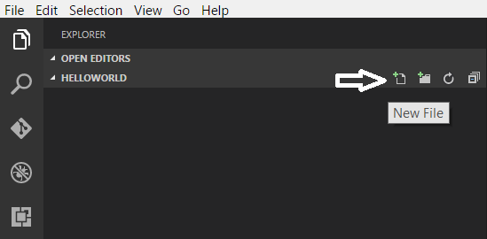
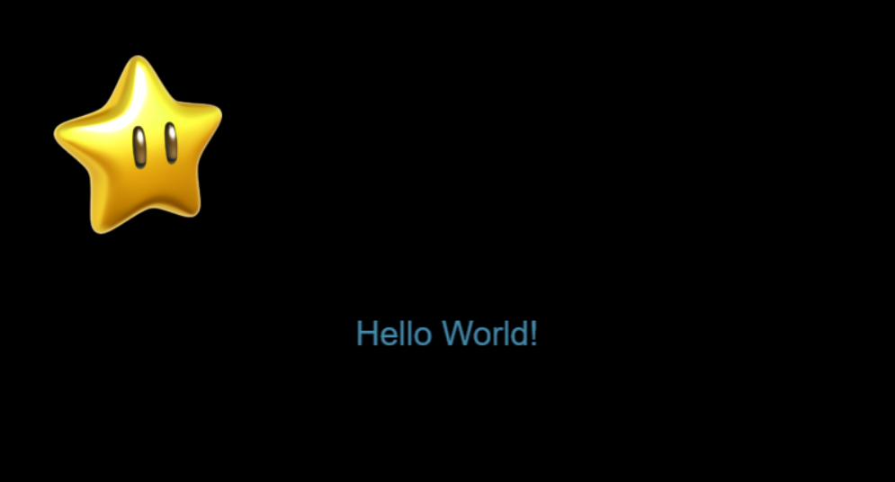

Getting started with JavaScript
JavaScript is the programming language of HTML and the web. It is used to program the behavior of web pages.
First download and install Visual Studio Code.
Hello World in Scratch
In Scratch, you have learned to output dialogs like this:


But how do you do this in C#?
1. Create a folder called HelloWorld on your desktop.
2. Open Visual Studio Code and go to File - Open Folder and select the HelloWorld folder you set up in step 1.
3. Click on the new file icon in the Explorer to add a new file.
4. Name the file helloWorld.html
5. Add the below code.
6. Save the file.
7. Open the helloWorld.html file in a browser and it should display like below.

Now we are going to create a simple project using Phaser.
This is what your index.html file should look like.
It is recommended to use web browsers such as Firefox, Safari or Edge for all your Phaser projects.
1. Create a folder called MyFirstPhaserProject on your desktop.
2. Inside the MyFirstPhaserProject folder create another folder called js.
3. Download phaser.js file from phaser.io.
4. Cut and paste the file into the js folder.
5. Open Visual Studio Code and go to File - Open Folder and select the MyFirstPhaserProject folder you set up in step 1.
6. Click on the new file icon in the Explorer.

7. Name the file index.html
Game Stage in Scratch
In Scratch, you start with a stage like this

But how do you do this in JavaScript?
Creating a game stage using Phaser
1. Open the index.html you created in the previous part.
2. Add the below code.
3. Save the file
4. Open the index.html file in a browser and it should display like below.

1. Using the index.html file you created in the previous part, google search any star png image of your choice and save it inside your project folder as star.
2. Go back to Visual Studio Code and add the following code.
3. Save the file.
4. Open the index.html in a browser and your image should display something similar like below.
Now we are going to add some text!
1. Go back to the index.html file.
2. Add the following code inside the function create().
3. Save the file.
4. Go the project folder and double click on the index.html to open the file in a browser.
The browser should display the text "Hello World!" and the star image like below
Let make the star move!
1. Go back to the index.html file.
2. Add the following code after the function create().
3. Save the file.
4. Go the project folder and double click on the index.html to open the file in a browser.
You should be able to move the star image using the arrow keys.
Well done! You have just created your first Phaser project!! You are now ready to start making your first phaser game!